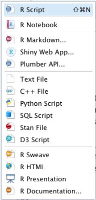

En RStudio se pueden crear archivos de diversos formatos.
Al final de esta sección podrás crear un archivo y escribir en él algún código R, que podrás correr ( Run) y obtener resultados.
La forma más común de escribir, editar, guardar y correr códigos de R.
Ingresar y ejecutar tu código en la línea de comando R en la consola, es efectivo y simple. Sin embargo, esta técnica tiene sus limitaciones; cada vez que desees ejecutar un conjunto de comandos, debes volver a ingresarlos en la línea de comandos. Los comandos complejos están potencialmente sujetos a errores tipográficos, lo que requiere que se vuelvan a ingresar correctamente. Repetir un conjunto de operaciones requiere volver a ingresar el flujo de código. Afortunadamente, R y RStudio proporcionan un método para mitigar estos problemas, y los scripts de R son la solución.
Un script es simplemente un archivo de texto que contiene un conjunto de comandos y comentarios. El script se puede guardar y usar más tarde para volver a ejecutar los comandos guardados. El script también se puede editar para que puedas ejecutar una versión modificada de los comandos.
Puedes abrir un archivo de comandos vacío, o script file, haciendo clic en File, en el menú principal, y seleccionando New File, y R Script; alternativamente, puedes abrir el menú de archivos, haciendo clic en la cruz blanca al extremo izquierdo, arriba, en el panel de RStudio.
Una vez creado el espacio para códigos, es recomendable guardarlo como archivo .R en el lugar adecuado del directorio, asignándole un nombre corto que indique de que se trata el procedimiento a trabajar; para esto debes hacer clic en la figura del diskette azul, o usar el menú File, Save.
Referencias
R scripts. (n.d.). Retrieved July 29, 2020, from http://mercury.webster.edu/aleshunas/R_learning_infrastructure/R%20scripts.html
Al terminar esta sección conocerás algunas de las reglas para escribir códigos en R
Escribir códigos en un lenguaje de programación como R, requiere seguir ciertas reglas ‘gramaticales’, como en cualquier otro lenguaje, para poder lograr una comunicación efectiva, con consistencia y buen entendimiento entre las partes. En el caso de un lenguaje de programación, aunque generalmente el número de ‘palabras’ es menor, pero por ser la comunicación mediada por una máquina, esta no posee, hasta ahora, la flexibilidad de los seres humanos que permite entender palabras mal escrita o incompletas, o variaciones en el orden de las mismas.
Aunque muchos de los códigos que estarán utilizando en los cursos y proyectos podrán copiarlos, es recomendable que escriban algunas líneas de código cortas por su cuenta, para familiarizarce y ejercitarse en la escritura de códigos, ya que siempre deberán realizar edición de los códigos, para adaptarlos a sus datos y procedimientos.
Vamos a empezar con algunas definiciones de términos. En R, un objeto es cualquier cosa que se puede asignar a una variable. Esto incluye constantes, estructuras de datos, gráficas, funciones. Todo objeto tiene un mode, que describe cómo se guarda el objeto, y una class, que indica cómo lo van a manejar las funciones.
Las funciones contienen argumentos, que debemos definir para obtener los resultados esperados, aunque usualmente traen argumentos por defecto ( default).
El símbolo # se utiliza para iniciar la escritura de texto, que no funcionará como código en el momento de ser procesado. Es muy importante esta escritura, para documentar los códigos que se utilizan:
# este es un ejemplo de su uso
mean(c(3,5,7,4)) # la función mean calcula la media de un conjunto de númerosNombre de variables: el nombre de las variables a las que se asignan valores, resultados de funciones, gráficas, et c., no es recomendable que sean de las funciones del sistema (mean, list, c, sd, et c.). Hay una lista de nombres reservados que no se pueden usar; para verlas puedes escribir ?reserved en la consola.
Usar nombres con minúsculas ayuda a evitar errores al escribirlos varias veces. Es recomendable usar abreviaturas que ayuden a recordar su significado, y si hay una serie de objetos similares o con nombres compuestos, utilizar la línea de subrayar ( underscore):
# uso indebido de nombre:
mean <- mean(c(3,5,7,4))
# nombre adecuado:
media <- mean(c(3,5,7,4))
# nombre abreviado
rect <- ancho * largo
# mejor
area_rectang <- ancho * largo
# si tenemos varios cálculos repetidos
area_rectang_1 <- ancho_1 * largo_1
area_rectang_2 <- ancho_2 * largo_2Argumentos de funciones: es recomendable dejar espacios entre los operadores (+, *, /, -, =), dentro de los argumentos de las funciones. Dejar un espacio después de coma, pero nunca antes.
# bien
desv_estandar <- sd(c(3, 5, 6, 7), na.rm = TRUE)
# mal
desv_estandar<-sd(c(3,5,6,7),na.rm=TRUE)Tamaño de las líneas de código: para evitar confusión y errores se debe evitar escribir líneas de código muy largas, preferiblemente deben tener menos de 80 caracteres. Si una línea de código es muy larga se puede cortar, luego de una coma preferiblemente, usando la tecla de nueva línea: return o enter. Automáticamente el editor indenta las nuevas líneas.
# corte de línea de código larga.
# muy larga y confusa:
plot(X, Y, main = "A plot", xlab = "X Values", ylab = "Response", lty = 1, pch = 5, cex = .75)
# mejor:
plot(X, Y, main = "A plot",
xlab = "X Values",
ylab = "Response",
lty = 1, pch = 5, cex = .75)Nombre de archivos: para nombrar los archivos script de R, recomiendo nombres cortos o abreviados relacionados al procedimiento; si es necesaria más de una palabra, separarlas por guión: area-rectangulo.R (la extensión .R la pone automáticamente el sistema).
Referencias
R Tutorial—Learn R Programming. (n.d.). DataMentor. Retrieved July 29, 2020, from https://www.datamentor.io/r-programming/\
Style guide · Advanced R. (n.d.). Retrieved July 29, 2020, from http://adv-r.had.co.nz/Style.html\
Al finalizar esta sección podrás obtener resultados al correr códigos R
Una vez que tenemos listo un archivo R Script, podemos obtener los resultados de lo que esperamos haga el mismo, esto es ‘correr’ el código. En RStudio podemos hacerlo de diversas formas, cada una con su aplicación a diversos fines.
Usando Run: teniendo abierto el archivo R Script, podemos colocar el cursor al final de la línea de código que deseamos correr, o seleccionamos con el cursor un grupo de líneas de código, luego usamos Run (parte superior de la ventana del editor) o command + return en MacOS o su equivalente en Windows.
Usando Source: con el archivo R Script abierto en la ventana de edición, hacemos clic en Source (parte de arriba de la ventana de edición), y todas las líneas de código corren, deteniéndose solamente si el programa requiere alguna entrada de datos.
Usando el comando source: con el archivo R Script abierto o cerrado, escribimos el comando source(“nombre-del-archivo”), si este se encuentra en el directorio de trabajo, y el programa correrá igual que en el caso anterior.
Referencias
How to run the code. (n.d.). Retrieved August 2, 2020, from http://www.rexamples.com/8/How%20to%20run%20the%20code\
R Tutorial—Learn R Programming. (n.d.). DataMentor. Retrieved July 29, 2020, from https://www.datamentor.io/r-programming/\
* histograma
En este ejercicio les mostraré como en R se pueden hacer cálculos y visualizaciones aparentemente complicadas, con muy pocas líneas de códigos.
Usarán el siguiente archivo R Script: ejercicio-script.R
* area triángulo
Les toca a ustedes escribir su primer (o repasar) programa en R. Abre y guarda un archivo R Script con un nombre relacionado a la actividad a realizar.
Al terminar esta sección podrás identificar al menos dos nuevos tipos de archivos en R Studio
Al hacer clic en el ícono de la cruz blanca, extremo izquierdo, arriba, aparece un menú de diferentes tipos de archivos que se pueden crear en RStudio, además de R Script.

En este taller estaremos trabajando con dos de ellos: